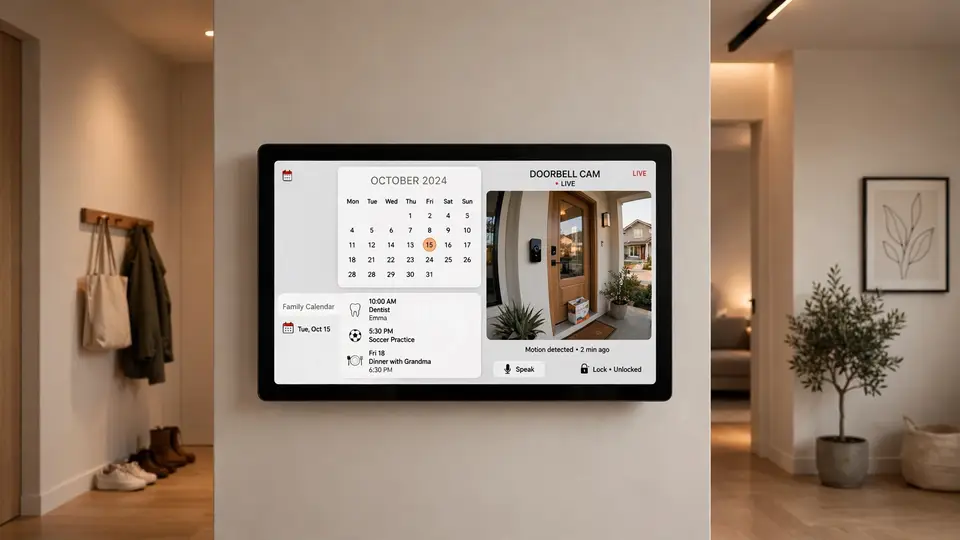
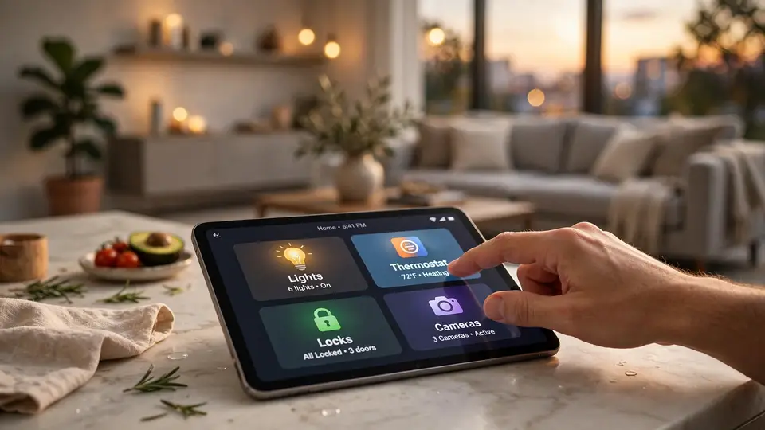

Apple brings Siri AI home: the $299 HomeView hub leads a four-product smart-home launch
Apple has unveiled its first smart-home hub. Announced on Tuesday at the “Welcome home” event in New York, HomeView is a Siri AI command center for the home, priced at $299 in two versions — arriving alongside a HomePod mini 2, a new Apple TV 4K, and a new Apple Home Collection of accessories co-developed with LG and Schneider Electric. All three devices are available to pre-order today.
This is the Siri AI debut Apple’s smart-home line has been waiting for. The hub was originally expected in 2024 but slipped as Apple rebuilt Siri; the new assistant entered beta on Apple’s existing devices in September. Now the home gets hardware to match — and Apple is wrapping it in a full ecosystem play, from the speaker to the TV to the doorbell.
HomeView: the centerpiece
HomeView pairs a 7-inch Liquid Retina display with a domed speaker base, powered by Apple’s A18 chip. Apple says the device includes Secure Exclaves protecting camera and microphone data, and it can recognize up to six people by face, giving each their own Home Screen. There are two hardware versions: a countertop model with the speaker base — in silver, starlight, rose pink and space gray — and a wall-mounted model in space gray and silver. Both cost $299.
Siri AI arrives in beta as part of HomeView software 27.2, and personal context requires a paired Apple Intelligence-enabled iPhone or iPad. Notably, HomeView runs only a limited selection of Apple apps — there is no App Store — and it will not be sold in the EU, where Apple says Siri AI is currently unavailable in iOS.
Pre-orders opened today, with availability on November 13. Schneider Electric will also sell wall mounts from $59.95 in early 2027.

HomePod mini 2 and the new Apple TV 4K
The second-generation HomePod mini ($149, available October 30) gets the Apple Watch S10 chip, five colors — pink, green, blue, white and midnight — a “Sound Glow” light on top, and sound recognition for smoke and carbon-monoxide alarms. Paired with the new Apple TV 4K, four minis can build what Apple calls its most immersive home-theater surround setup yet. Siri AI, Apple says, is “coming … in a future software update” — the one device of the three that doesn’t get it on day one, six years after the original mini debuted.
The fourth-generation Apple TV 4K ($299, available November 13) moves to the A19 chip — Apple claims up to 50% faster CPU and 2x faster GPU versus the previous generation — with a new dedicated AV1 decoder, three far-field microphones for completely hands-free Siri, and a Siri Remote that keeps its design but adds Find My with Precision Finding. Siri AI ships in beta in tvOS 27.2, including a full-screen conversational search that pulls poster art from the Apple TV app and, with an Apple Intelligence-enabled iPhone, personal-context answers like “play the show Alinda recommended.” “With Siri AI, finding something to watch becomes a full-screen, conversational experience, and with built-in far-field microphones, it’s completely hands-free,” said Bob Borchers, Apple’s vice president of Worldwide Product Marketing.

The Apple Home Collection
Apple is also launching Apple Home Collection, a line of smart-home accessories co-developed with LG Electronics and Schneider Electric, set up with one tap on iPhone and arriving in December, with select items in early 2027. LG’s lineup: a $249.95 video doorbell, a $399.95 floodlight camera, $299.95 outdoor and $199.95 indoor cameras, a $349.95 smart deadbolt (US and Canada only), a $199.95 smart thermostat and a $39.95 temperature sensor. Schneider Home contributes a $199.95 smart thermostat and a $39.95 room sensor.
The Siri AI caveat sheet
The fine print matters. HomeView and Apple TV 4K ship with Siri AI in beta; the HomePod mini 2 does not, with no date given for its update. Apple notes that some Apple Intelligence features have daily usage limits and that expanded access will be available “for a fee in the future” — and several features need an iCloud+ plan or an Apple Intelligence-enabled iPhone or iPad. On geography, HomeView’s launch list is the US, Canada, the UK, Australia, India, New Zealand, Singapore and South Africa — the EU is excluded, with Apple saying it is working with EU regulators on a path.
Available now
HomeView, HomePod mini 2 and Apple TV 4K are all available to pre-order today; the mini lands October 30, with HomeView and the new Apple TV following on November 13. After years of rumors — and a two-year slip — Apple’s smart home finally has a centerpiece, and its name is Siri AI.
Sources: Apple Newsroom — “Meet Apple HomeView, a new way to enjoy entertainment, stay connected, and manage the home” (October 13, 2026); Apple Newsroom — “Apple unveils the new Apple TV 4K, supercharged by Siri AI” (October 13, 2026); Apple Newsroom — “Apple announces the next generation of HomePod mini” (October 13, 2026); RR Tech Pulse — “Apple HomeView $299, HomePod mini 2 $149” (October 13, 2026); Appleosophy — “Apple Announces HomeView, New Apple TV 4K, and New HomePod Mini” (October 13, 2026)